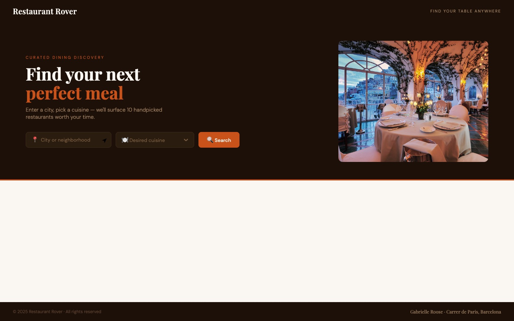
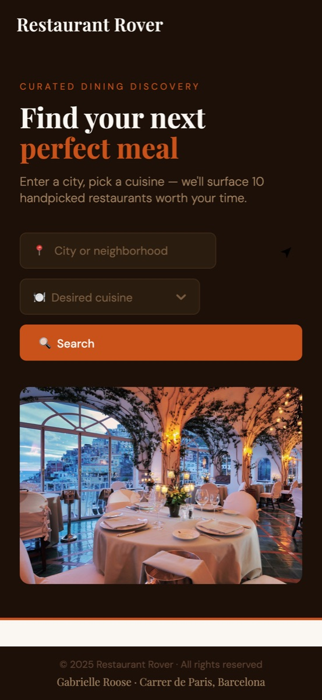

Why I built it
I was living in Barcelona and wanted to find fun new places to eat.
I was studying abroad in Barcelona and wanted one place to discover new restaurants and sort them by cuisine, without scrolling through Google Maps. So I built it.
My role
Restaurant Rover was my own idea, built during the Web & Mobile Development program at Barcelona Code School. I designed and built it myself.
The design
I gave Restaurant Rover an editorial, food-magazine look: a dark, warm palette, a serif headline and a big restaurant photo. It's responsive, so it works on phones as well as laptops.
Searching takes two steps: type a city (or use your location) and pick a cuisine. Each result shows the price per person, rating, top dish, atmosphere and dress code, so you can decide without opening another app.




Building it
Getting an AI model to answer in a format the app can use.
Restaurant Rover is a React app built with Vite. Instead of a restaurant database, it asks an AI model (ChatGPT, through RapidAPI) for ten restaurants, and uses OpenStreetMap to turn your location into a city name.
The tricky part was getting answers the app could actually read. I wrote the prompt to return only a JSON list, with an example restaurant showing every field, so each answer turns straight into a results card.
Reflection
This was the first app I built just because I wanted it. I was its first user, so I could judge every design choice by one question: does this help me pick where to eat tonight?